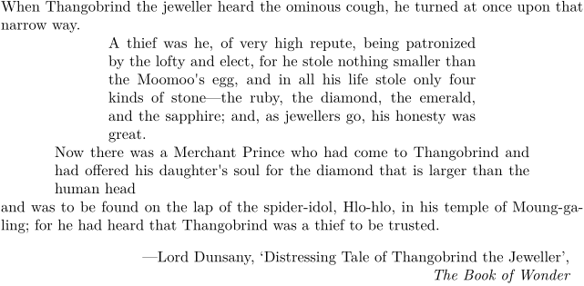

Syntax (autogenerated)
| \setupnarrower[...,...][...=...,...] | |
| [...,...] | name |
| left | dimension |
| middle | dimension |
| right | dimension |
| default | [+-]left [+-]middle [+-]right number*left number*middle number*right reset |
| before | command |
| after | command |
Description
Set default values for the left, right, and middle parameters of \startnarrower. \startnarrower will still use middle by default, unless you specify left for right, but you need no longer specify the width of the extra margin(s) requested.
Comment
The use of narrower is a bit abnormal.
\startnarrower (\startsmaller in dutch) is one of the oldest commands in ConTeXt. It predates the now-normal conventions by a few years.
Don’t expect any changes to \startnarrower. A more predictable alternative is \startnarrow.
Example
-
\setuppapersize[A5] \setupnarrower[middle=1cm, left=2cm, right=2cm] When Thangobrind the jeweller heard the ominous cough, he turned at once upon that narrow way. \startnarrower[left,right] A thief was he, of very high repute, being patronized by the lofty and elect, for he stole nothing smaller than the Moomoo's egg, and in all his life stole only four kinds of stone---the ruby, the diamond, the emerald, and the sapphire; and, as jewellers go, his honesty was great. \stopnarrower % \startnarrower without any arguments is equivalent to \startnarrower[middle] \startnarrower Now there was a Merchant Prince who had come to Thangobrind and had offered his daughter's soul for the diamond that is larger than the human head \stopnarrower and was to be found on the lap of the spider-idol, Hlo-hlo, in his temple of Moung-ga-ling; for he had heard that Thangobrind was a thief to be trusted. \blank \rightaligned{---Lord Dunsany, \quote{Distressing Tale of Thangobrind the Jeweller},} \rightaligned{{\it The Book of Wonder}}
- 
See also
Help from ConTeXt-Mailinglist/Forum
All issues with: